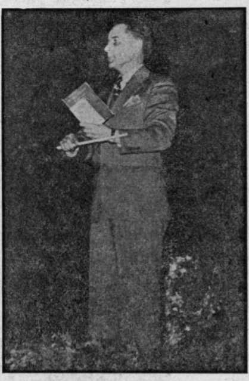
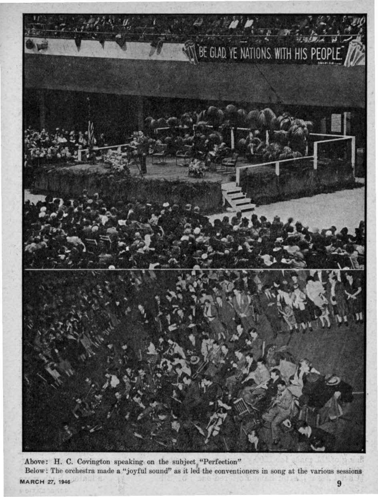
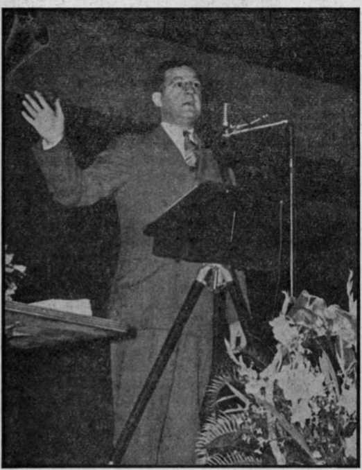
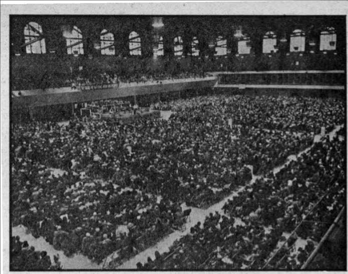

Part of the audienee of 12,400 listening to the lecture “Be Glad, Ye Nations” Sunday afternoon, February 10

The Northeastern Assembly of
' “The Reset of Unleavened Bread”
The Greatest Thrill of the Assembly
“Thy Word Is Truth”
“Millions Thrown Away in Cancer Research" 18 "The Importance of Myself” .
Some Near Poetry from England: Help!
Guiding the Young in the "Way of Life
Published every other Wednesday by WATCHTOWER BIBLE AND TRACT SOCIETY, INC. 117 Adams St., Brooklyn 1. N. Y., U. 8. A. OFFICERS President , N.H. Knorr
Secretary W. E. Van Amburgh
Editor Clayton J. Woodworth
Five Cents a Copy f! a year in the United States JI.25 to Canada and all other countriea
NOTICE TO SUBSCRIBERS
Remittances: For your own safety, remit by postal note or by postal or express money order or by bank draft. When coin or currency is lost in the ordinary mails, there Is no redress, liemlttanees frotn countries other than those named below may be made to the Brooklyn office. but only by International postal money order. ,
Rjceiet of a new or re ne ’al subscription will be acknowledged onty when requested. Notice of Expiration is sent with the journal one month before subscription empires. Please renew promptly to avoid loss of cop!os. Send change of address direct to us rather than to the poet office. Your request should reach us at least three weeks before the date of issue with which it is to taka effect. Send your old as well as the new address. Copies will not be forwarded by the post office to your new address unless extra postage is provided by you.
Published also In German, Greek. Portuguese, Spanish and Ukrainian. '
OFFICES FOR OTHER COUNTRIES
Australia Canada England India Newfoundland New Zealand Philippine islands South Africa
7 Beresford Rd., Strathfield, N. S. W.
40 Irwin Ave., Toronto 5, Ontario
34 Craven Terrace, Ixmdon, W. 2
167 Love Lane, Bombay 27
P. O. Box 621. St. John's
177 Oanlell St., Wellington, S. 1 1219-B Oroquieta St., Manila
623 Boston House, Cape Town
Entered ae second-class matter at Brooklyn, N. Y.t under the Act of March 3, 1379.
In Brief
Boiling Vesuvius
♦ Located seven miles east-southeast of Naples, on the Bay of Naples, the sides of Mount Vesuvius have always been richly cultivated. On one of the ridges, the Neapolitan government has maintained an observatory for more than a hundred years. In normal times, a wirerope railway carries visitors to within 450 feet of the crater. The basal circumference of the mountain is 30 miles; the height varies from 3,700 to 4,300 feet. In the classical eruption of A.l). 79, it is thought that no lava was thrown forth but that Pompeii, Herculaneum and Sta-biae were buried by the action of rain and steam sweeping down torrents of volcanic mud.
Steady Work for Employees
♦ The big soap-making concern, Proctor and Gamble, found that they could provide much more steady, work for their workers without selling much of anything at wholesale. Now they have twenty-seven district sales offices, which each year submit approximate figures covering their expected needs for the coming year. These estimated sales-figures form the basis for production-planning, and the stream of work instead of being a succession of jerks and stoppages How's smoothly throughout the year.
Drilling Oil Wells Horizontally
♦ Did you know that oil wells may be drilled horizontally? They may even be inclined slightly upward. This is now being done in western Pennsylvania. A big shaft is sunk to the bottom of the oilbearing sands. Then the drilling is done, with the holes radiating from the center like spokes of a wheel from the hub. The oil flows towuird the lowest point, where the drilling was done, whence it is readily pumped to the surface. In this way, virtually all the oil beneath a 400-acre field w'as recovered. ■
“And in His name shall the nations hope.”—Matthew 12:21, A.S. V.
Volume XXVII
Brooklyn, N.Y,, Wednesday, March 27, 1846
Number 692
GIjADj Ye Nations” were the
AJ eye-catching words seen on the many large billboards as one entered the city of Baltimore, Md,, on the morning of February 8. Also there were seen on that day hundreds of ambulating placards bearing this same gladsome announcement. They were worn by men and women, and children too, who were handing out invitations to a lecture for Sunday February 10 on the subject “Be Glad, Ye Nations”.
It was indeed a strange sight. At a time when the whole world is experiencing so much trouble, why would people be heralding forth a message like that? It was because Jehovah’s witnesses were holding a three-day Assembly in Baltimore. And these witnesses really had something to be happy about; so they were inviting the good people of the city to also join with them in rejoicing and being glad.
More than three months prior to this Assembly the president of the-Watchtower Society, N. EL Knorr, left for an extended trip through war-torn Europe to see what could be done to aid and help those desolated people. It was arranged at that time that upon his return to this country an assembly would be held that would afford him an opportunity to give Americans a firsthand account of his trip and to tell them what he had learned about conditions over there. Various cities were contacted for a location that would accommodate at least 10,000 persons, and it -was found that Baltimore was the only city on the Eastern Seaboard that offered suitable facilities. So the Fifth Regiment Armory was engaged for the three-day Assembly.
Fifth Regiment Armory, Baltimore, where the Northeastern Assembly of Jehovah’s witnesses was held
MARCH 27, IMS 3
Fifth Regiment Armory, Baltimore, where the Northeastern Assembly of Jehovah s witnesses was held
MARCH 27, 3
This Armory is a building of massive gray stones occupying the whole of a city block in the center of town. Modern in construction, and being well-lighted and heated with a good ventilating system, it proved to be very ade-'quate for the purposes of the Assembly. ’Jhe basement had ample room for the various departments set up to handle the many activities around which such an Assembly as this rotates. Th the basement there was also room for the operation of a large cafeteria capable of feeding the many thousands that attended.
Week£ before the anticipated Assembly the Watchtower committee went to the Hotel Association of Baltimore and asked them how many rooms they would have for Jehovah’s witnesses that were coming from out of town. The Association said they did not have accommodations for more than two persons. They then asked how many of the witnesses were expected,' and were told “ten thousand”.
“Ten thousand! Do you mean 10,000?”
“Yes, about 10,000 ”
“Why, we never had that many here for a convention. Do you really mean 10,000?” .
“Yes, at least that many,” was the answer of the committee. But still the Hotel Association would not promise a single room.
It was therefore necessary for the Watchtower Society to bring in several hundred full-time publishers, pioneers, special pioneers, and graduates of the Watchtower Bible College of Gilead, to assist the local brethren in going to the private homes of the people in search of rooms for their brethren that would come from out of town. Thousands of hours were thus spent in procuring rooms during those weeks preceding the Assembly. And, by the fjord’s grace, the desired results were obtained. Those good people of Baltimore who opened . up, their homes and made room for these “slieep” of the Lord’s great flock were not forgotten, either, but were remembered by the Lord for their kindness to His witnesses, as we shall see later on.
Before the opening day of the Assembly hundreds of Jehovah’s witnesses had arrived for the purpose of helping out with the preliminary work necessary for the “feast”; and the feeding of 10,000 persons, materially and spiritually, for a three-day period is no small undertaking. Early Friday morning more of the witnesses began to arrive, not by hundreds, but.by thousands. From all directions they came and by every means of transportation: by auto, by bus, by train. Trains from Boston, Pittsburgh, Philadelphia and New York brought these happy people to the one assembly point. Then, a little after 1 p.m. a specially chartered train from New York, consisting of 15 coaches and pulled by two engines, rolled into the Mt. Royal railroad station two blocks from the Armory and unloaded its 1,014 merry passengers, all of whom were Jehovah’s witnesses. That train was the first “Bethel Special” since tjie St. Louis Convention, in 1941.
February 8 was a busy day 'in Baltimore with thousands of Jehovah’s witnesses going to ,and fro locating their assigned rooms. The comparatively few witnesses that were turned away from their assignments due to Catholic Action soon located other homes where the people were more kind and considerate, and were then able to return to the Armory in time for the opening session.
The Assembly Officially Opened
“This is the Northeastern Assembly of Jehovah’s witnesses,” were the opening words of Grant Suiter, the chairman, at seven o’clock Friday evening. As he spoke those words a glance over the audience of 7,506 intelligent faces told on,e that these people had not come there for social reasons but for the purpose of learning all they could. They were eager and expectant. Eager they were to hear the things the Lord had in store for them, and expectant too of learning about the conditions of their brethren in Europe.
The chairman in his opening address took up the subject of “Consecration” in a very practical way. “Jehovah or this world: to which will you be consecrated?” Consecration of all that one has to this old world of business, politics and religion, which is all run by Satan the Devil, or consecration to God and His New World of righteousness. Consecration to the patehed-up makeshift called the United Nations Organization, or consecration to the Theocratic rule by Christ Jesus. The need to choose between these two positions is compulsory upon all people whether they like it or not. As for those assembled in Baltimore, the chairman showed that they had already decided the question correctly by consecrating themselves to Jehovah God’s kingdom and were therefore under the leadership of Christ Jesus, “The Commander.” In this ten-minute speech the chairman very forcefully, and with clarity, sounded the right note, the keynote, for the balance of the Assembly.
During the next thirty minutes the audience united their voices in joyful song as an expression of their gratitude to their Creator for His goodness in arranging this Assembly for them. They also listened to some very interesting experiences related by graduates of the Watchtower Bible College of Gilead. These events up to this point served as an appetizer. The three-course “feast” of the evening was about to begin.
“The Feast of Unleavened Bread”
■ Three talks were listed on the program for Friday night, “Preliminary to the Feast,” “Let Us Keep the Feast,” and “Keeping the Feast Now”. Such subjects gave some hint beforehand that Jehovah had arranged this Assembly as a spiritual feast for His hungry witnesses. And so it was.
' The first talk dealt with the preliminaries 'to the “feast of unleavened bread” that 'the Israelites began to eat while in Egypt. Every detail was drawn out in ■word-language so vivid that one could almost hear the Egyptian dogs howling. The purpose of this speech was to set the stage, so to speak, for the next one: “Let Us Keep the Feast.”
This second talk dealing with the actual deliverance of the Israelites took on a dramatic brilliance befitting the events as it told how Jehovah brought His people out of bondage with a high and mighty hand. From one event to another the account swept with dynamic force as it first described the fleeing multitude with the Egyptians in hot pursuit, and then the crossing of the Red sea followed by the destruction of Pharaoh’s mighty hosts. It was shown that all of these things took place during the weeklong “feast of unleavened bread”.
The third speaker was the president of the Watchtower Society, N. H. Knorr, who spoke on the subject “Keeping the Feast Now”. He dealt with the realities of these things and showed that the Lord’s people today must keep this “feast of unleavened bread” continually.
Basing his discussion on the fifth chapter of First Corinthians he showed that leaven represents sin and it must therefore be cleaned out from among the Lord’s people. “Know ye not that a little leaven leaveneth the whole lump?” Christians must therefore ‘purge out the old leaven’ of this modern Egyptian world of the Devil, the leaven of commerce, politics and religion, in order that they “may be a new lump” wholly and completely devoted to the pure and clean worship of the great Jehovah God. So doing “let us keep the feast, not with old leaven [of religion], neither with the leaven of malice and wickedness”. But rather “let us keep the feast . . . with the unleavened bread of sincerity and truth”. Jesus warned Christians to “beware of the leaven of the Pharisees and of the Sadducees”. (Matthew 16:6) Therefore Jehovah’s consecrated people today must be clean of cyery trace of
leaven if they are to continue to have God’s blessing and protection over their march toward the lied Sea of Armageddon. .
The speaker told his audience that if they kept busy in the service of the Lord there would be no opportunity for the * fermentation of this old world’s leaven to creep into the loaf of Jehovah’s witnesses. If they kept as busy as they did in the preceding month, January, there would be no time left to get contaminated with the sins of this present evil world. He then gave them some figures to show how busy they really had been in January.
During the Watchtower Campaign in 1945, in the one month of January the publishers in the United States sent in something like 20,000 subscriptions. But this year in the month of January the figure was nearly doubled: over 39,000 new subscriptions were received in the Brooklyn office! This brought a roar of applause from the audience. Then the speaker told the witnesses that if they continued to keep busy pushing the witness work on through the remainder of the four-month Watchtower Campaign, yes, and clear on through to the battle of Armageddon, then they would not need to worry about any leaven of malice and wickedness developing in their hearts and minds.
Because of this great increase in field activity on the part of the publishers, he said, it would be necessary to increase the membership of the Bethel family at Brooklyn by sixteen. Any that wanted to volunteer for this privilege he said he would like to see the next morning at nine o’clock.
The Friday night session was surely a grand feast for the Lord’s people assembled in Baltimore. All it needed was a little dessert to top it off and leave a sweet, satisfied taste lingering in the mouth. So the Lord in His goodness supplied that little touch of sweetness. At the conclusion of his talk Mr. Knorr held up a copy ofi Kingdom News, No. 15, with the announcement that it was then and there released and each one could take with him fifty or so copies. He told them to 'leave a copy with those that would read it, particularly .those of goodwill whom they would meet in their house-to-house witnessing work in Baltimore.
"Kingdom News” No. 15
“Would Conspiracy Against the Truth” was the title of this new release, and it dealt with six fundamental questions of major importance. (1) Is it true that the Catholic Version Bible says, “A conspiracy? for all that this people speaketh, is a conspiracy”? (2) Is it true that the present international cooperation of the United Nations Organization will fail in its purpose to bring in lasting peace and security to mankind? (3) Is it true that the people, in hoping for freedom and prosperity, are meditating a vain thing? and are their kings and rulers really fighting against God and his Anointed King by counseling a substitute for the actual kingdom of God?. (4) Is it true that the mixture of religion and the political states will fail in the postwar era? and will Jehovah God shortly be obliged to destroy the mixed religious-political setup completely in order to make room for the rule of his Government over this earth? (5) Is it true that God’s destruction of this present world organization will be followed by a righteous new world, with new invisible ruling powers over men and with a new earthly organization among men on this globe? (6) Is it true that the kingdom of Jehovah God by his Anointed King will establish lasting peace and security and will enforce right and truth?
The answer given in 'Kingdom News, No. 15, to each of these six questions is “Yes”, and such answer is backed up by indisputable proof from the Bible. The powerful argument is then concluded with these words: “The important question is, then, Will you yield and fall victim to the world conspiracy against the truth? or will you let the truth prevail in your heart and make you free for everlasting life in the righteous new world? Your eternal interests dictate that you resist the world conspiracy and that you seek and accept the truth. Therefore take heed to the message that Jehovah’s witnesses bring you from God’s Word of truth.”
Saturday was to be a big day. So an outline of its activity was given before Friday evening’s session came to a close. It was pointed out how the people of Baltimore had shown their hospitality in opening up their homes to Jehovah’s people and now the Lord’s witnesses were to have the privilege of paying them back in like kindness. This they would do by going from door to door in Baltimore Saturday forenoon and speaking with the people about the Kingdom, comforting those that were sighing and crying because of the abomination committed in “Christendom”. They would invite these people to “come” and partake of the feast of life-giving truth that the Lord had prepared for.His people and thus these lovers of righteousness in Baltimore could also rejoice and be glad with the Lord’s people. After a song of praise to Jehovah the first day of the Northeastern Assembly was brought to a close with a prayer of thanksgiving to the heavenly Father for all the good things that He had done for His children. *
Saturday Was Another Great Day
It was raining lightly in Baltimore Saturday morning, but this did not dampen the spirit of the many hundreds of witnesses that engaged in the house-to-house work. The territory assignments were near the rooms where the publishers were'staying, and this made it convenient for them. By engaging in this Christian activity on Saturday morning the witnesses worked up an appetite for the spiritual food that was to be served during the afternoon and evening. Then when they had completed their work in the field the publishers assembled in the Armory, where they were able to get their midday meal of material food consisting of various sandwiches and fruit as well as milk and hot coffee.
By two o’clock every seat in the auditorium was filled and the orchestra, consisting of 30 musicians wholly devoted to The Theocracy, led the Assembly in singing songs that expressed in melodic beauty the sentiments of their hearts. Watchtower Bible College graduates were afforded the opportunity of sharing their good experiences with the audience. Among other things these special publishers told how kind and gracious the people of Baltimore were, and the applauding of the audience showed that they heartily agreed.
The first talk of the afternoon, on the-subject “Changed to See God”, began at ■2:30. In this discussion it was pointed out that if human flesh cannot survive the heat and brightness generated by atomic bombs, then far less is the possibility of human flesh and blood existing in the presence of the all-surpassing brilliance and glory of Jehovah God. Therefore the church of God, the 144,000 that become members of the body of Christ, must be “changed” at death from mere mortal flesh to become spirit creatures, in order to “see God”. This talk, by the nature of its material, led nicely into the next one, on the subject “The Hope of Things Not Seen”.
The second talk then showed that it is not the Platonic idea of inherent immortality self-contained within one, but rather the hope of receiving immortality as a gift in the resurrection that sustains the remnant members of the body of Christ now on earth. Also mention was made of the “things not seen”, as yet, that will be the portion of those that will live here on the paradise earth. Such information was gladly received by the Assembly, since the majority of those present were to be of the “great multitude” of those who will live on earth in the New World of righteousness. i
After the singing of another song the afternoon’s program continued with two more talks, “Perfection" and “Bringing in Perfection”. These were presented by ‘the Society’s two vice-presidents, H. C. ©ovington and F. W. Franz. Their talks led up from one scripture to another, step by step, to the all-embracing truth that it is perfection of integrity that must be attained by every creature that will ever live in the New World. Christ Jesus, though perfect in organism, nevertheless had to prove perfection in obedience and integrity. Likewise all other individuals will have'to be perfected in integrity, whether they eventually live in the heavens with Christ Jesus or on the earth with the princes.
Another point that struck home to the audience very forcefully was taken from the 10th chapter of the apostle Paul’s letter to the
Hebrews: “Every F w Frana conducting priest standeth Baltimore Assembly daily ministering - . .
and offering oftentimes the same sacrifices, which can never take away sins.” How true it is that the Catholic priests stand daily, offering many times the sacrifice of the mass, which can never take .away sins! No, never! Not by the sacrt-ticing of the mass for 1600 years has sin been lifted. “But,” says Paul, “this man [Christ Jesus], after he had offered one sacrifice for sins for ever, sat down on ’ the right hand of God.” “For by one offering he hath perfected for ever them that are sanctified.” With these points Scripturally established to the satisfaction and delight of all, the afternoon session ended, shortly after 5 p.m.
Feeding the Multitude
It was during the next hour and a half, between the afternoon and evening sessions, that the efficiency of the Theocratic cafeteria in the basement showed its greatest performance. In that short time many thousands were served their supper in a most orderly and systematic manner. It was a magnificent display of the cooperation, love and unity that exists among Jehovah’s people, people who are activated by the spirit of God and riot by the selfish spirit of: this old world.
There was not the usual lingering in the cafeteria after this particular meal; for each
• .. . ■ ■ „ . one had read over
the spirited singing of ; ».•
of Jehovah’s witnesses the menu of spiritual blessings that were scheduled for Saturday evening. "Organization and Field Work in Europe” was a talk that all were very anxious to hear; so there whs more thaii the usual concern over getting a seat in the main auditorium. Beginning at seven o’clock thirty minutes was spent in singing songs and listening to more accounts of Bible College graduates. Such were
F. W. Franz conducting the spirited singing of the Baltimore Assembly of Jehovah’s witnesses
Above: H. C. Covington speaking on the subject,“Perfection”
Below: The orchestra made a “joyful sound” as it led the conventioners in song at the various session!
MARCH 27, IMS q
not ‘‘testimonials” of religious zealots, but were actual happenings that these tried and faithful witnesses had ex* perienced while engaged in the Lord’s service. Jehovah preserves and watches over those who put their implicit trust -,in Him, and His active force leads and ^directs those who are consecrated to Jehovah and not to this old world. Furthermore, those that keep busy in His service are clean from the leaven of this devilish world and consequently have God’s blessing. These were the points emphasized over and over again by the - experiences of the graduates of Gilead.
Report from Europe
When Mr. Knorr began to speak, at 7: 30, there was an intimacy in his voice that made every one there feel that he knew him personally; it was as if he was talking to each one individually. No speaker ever had closer audience contact. For two hours and more the hearts of that vast gathering throbbed in unison with the speaker’s as he took them from one country to another in recounting his recent trip to Europe. It seemed as though the world had suddenly shrunk to a very small diameter enabling the speaker to bring all of Europe into that Armory as he told of the suffering, misery, desolation and despair of the peo-Sles of France, Switzerland, Italy and Selgium, of the Netherlands, Germany and Denmark, of Poland too and Czechoslovakia, Austria, Hungary and Greece, of Norway, Sweden and Finland, of Russia, England and Ireland.
He told of the experiences of Jehovah’s witnesses in those countries and what they had endured under the terrible and cruel persecution by the Devil and his demons. When he related a few of the things that faithful Christians had suffered during the last twelve years under the beastly Nazi-Vatican-Fascist rule it made-tears come to the eyes of strong men as well as women. As he quietly recounted what their brethren had undergone in the fiendish concentration camps the hearts of the audience pounded within their breasts and their faces were flushed with emotion. They sat in silence as they sought to suppress the feelings that were surging within them. Lumps in the throats of the strong-hearted made it difficult for them to breathe as the speaker continued to tell what he had seen and heard about Jehovah’s witnesses in Europe.
Then, when he told them how, in spite of all of these things, the Devil failed to break the integrity of Jehovah’s faithful witnesses, the audience burst its silence with exclamations of joy. They cheered when he told them that these witnesses had continued to preach “this gospel of the kingdom” even when experiencing the most terrible things. In spite of the fact that hundreds had been tortured to death, yet to learn that Jehovah had greatly increased their numbers made their American brethren jubilant. This report of faithfulness on the part of God’s covenant-keeping people and the manifest evidence of the Lord’s blessing upon such made that whole Baltimore Assembly very, very happy.
When the speaker told them he had learned that at least 1,600 of Jehovah’s witnesses had been taken into Russia and were now there very busily engaged in preaching the Theocratic message in that distant land, the audience again applauded very enthusiastically. It was evidence to them that Jehovah in His good time and way is now gathering together the people of good-will out of all nations in order that they may ‘be glad with His people’. -
The speaker had met many of those who had outlived eight or ten years of concentration-camp life. He had seen them himself and talked with them. The looks on their faces he said were indescribable. One would have to see them personally and read the great sincerity written in the lines and wrinkles of their faces. Their eyes were steady and had a deep look of absolute fearlessness. They had passed through every killing experience that men or devils could conjure up and this gave them a feeling of confidence and trust in Jehovah that He is able to carry them through anything that the future may offer. Hence they are afraid of neither man nor devil.
Moreover, the speaker pointed out, there is only one thing that those who have been in concentration carnps desire, and that is to get back to their own country in order that they may preach this ‘good news of the Kingdom’ in their own language. Nothing else in this world matters to them. They have nothing in worldly goods; they seek nothing that this old world has to offer them. The Kingdom is their only hope and they are living in the knowledge that such Kingdom is now established in the heavens and will shortly take over the rule of this globe. They appreciate that it was only Jehovah’s holy spirit upon them that sustained and carried them through their experiences, and so they give all credit to their heavenly Father for preservation and deliverance. They are fully convinced that God protected * and brought them out alive for only one reason, and that is, so they can preach! And preaching they will do.
After telling of the suffering in Europe the speaker then gave some very interesting figures on the amount of food and clothing that had been gathered together by Jehovah’s witnesses in England, Denmark, Sweden, Switzerland and America. Tn tonnage and value a staggering amount of material aid had been sent from these countries into the war-torn areas up to the time of the Assembly. This report also made Jehovah’s witnesses in Baltimore very glad; for they personally had had a great share in it and they realized how happy such relief would make their faithful co-workers in Europe.
The Greatest Thrill of the Assembly
At the conclusion of his two-hour talk the president of the Watchtower Society said that when he was in Europe the witnesses over there were asking him about an international convention for Jehovah’s witnesses. They thought that either the American publishers could come over there or they could come to America. After toying with this possibility for a while, he suddenly announced to the Baltimore Assembly that the Society had made all the preliminary arrangements and that Cleveland, Ohio, had been chosen for the first postwar international convention of Jehovah’s witnesses, This sudden release had something of an atom-splitting effect upon the audience. They spontaneously burst forth with a prolonged hand-clapping accompanied by shouting and cheering. The speaker then said that it seemed • that a three-day assembly such as the one in Baltimore was entirely too short, and that therefore the one this summer will be eight days in length, from August 4 to 11. This simply brought the house down’ and the applause thundered and echoed as the happy witnesses gave expression to their joy.
Nothing that the speaker could have said would have made those convention-hungry witnesses happier than that announcement. And perhaps there never was a happier people assembled together than there was at that moment. Jehovah had indeed that night made the hearts of His people glad. The restraining bounds of this gladness were released and their joy overflowed as a surging stream breaks over its banks at flood stage.
Then Came the Final Day, February 10
Those that wanted to attend the Watchtower Bible College of Gilead and receive the necessary training to enable them to go into foreign fields, there to ‘disciple all nations’ and make them to “be glad . . . with His people”, were in- . vited to. assemble Sunday morning at nine o’clock in the Armory. A very large number responded, and it was surely good to see so many anticipating such a privilege. It gave evidence that Jehovah will not lack volunteers who will gladly go as His witnesses wheresoever it pleases Him to send them. ‘'Here am I; send me” was the attitude of these people who hope to live in God’s new world.
The large majority, however, of the , ten thousand witnesses in Baltimore could not qualify to attend Gilead. So, instead of going to the Armory Sunday morning these were busy going from house to house giving a final invitation to the people of the city to come arid hear the afternoon talk, “Be Glad, Ye Nations.”
4 At two o’clock the witnesses assembled m the Armory to sing their God-praising songs and to listen to more experiences from the mouths of former college students. Then at 2: 30 the president’s secretary, M. G. Henschel, began to talk on the subject “Europe After the War”. It had been his privilege to accompany the Society’s president on the recent European trip, and so he was well qualified to speak on the existing conditions. For an hour and a quarter the audience gave rapt attention as he told of things not touched on the night- before. The one point of his talk that stood out in relief above all of Europe’s horrors was the determination find zeal of Jehovah’s witnesses over there to carry out their covenant of consecration and to faithfully push the Kingdom witness work during this postwar era. In comparing their conditions now with their former circumstances of restraint and servitude Jehovah’s witnesses all over Europe liken their present state to that of paradise. It matters not to them whether they have sufficient food and clothing and a nice home. As long as they are able to talk to people and tell them the glad tidings of the Kingdom that will vindicate Jehovah’s name these witnesses are contented. At the conclusion of this very interesting report there wTas an intermission of fifteen minutes before the big event of the day.
The president of the Society, N. H. Knorr, addressing the convention Saturday evening on the experiences of Jehovah’s ' witnesses in Europe, and the re-organization for further , activity there
“Be Glad, Ye Nations’*
For three days a concentrated campaign had been carried on in and about Baltimore advertising this heart-cheering talk. It -was now four o’clock and time for the delivery of this message of comfort to all who w'ould 'come and hear’. The chairman rose and with a few words of introduction he presented the speaker for the occasion, “N. H. Knorr, president of the Watchtower Society.”
The president of the Society, N. H. Knorr, addressing the convention Saturday evening on the experiences of Jehovah's witnesses in Europe, and the re-organization for further activity there
Mr. Knorr’s preliminary words which served as an introduction led him to make this frank observation: “After sixteen hundred years of religion, ‘ Christendom,’ which combines both totalitarian and democratic powers, is not rejoicing.”
Part of the audienee of 12,400 listening to the lecture “Be Glad, Ye Nations” Sunday afternoon, February 10
-Ki
■ ’A*'?
J
“Why,” he asked, “should any or all of the nations of the world rejoice?” After explaining why the present sorrowful conditions exist as they do he then called attention to other things, things that give Jehovah’s witnesses ample reason to rejoice. He pointed out that the people could not be glad with the Vatican pontiff, who mourns over existing conditions. But rather the people should rejoice now with Jehovah’s witnesses, who bid all people of goodwill of all nations to be glad with them. These witnesses of the Lord are rejoicing in a knowledge of the fact that the kingdom of Jehovah God has now been established, that Christ is now reigning in the midst of His enemies, and that the abomination that stands up in the form of the United Nations Organization in the place of God’s kingdom will shortly be destroyed by Christ Jesus, who is, “King of kings, and Lord of lords”. '
The speaker’s conclusion was not bombastic, but was a sincere and warm appeal from his heart to that of his listeners. He urged upon them to now prepare themselves to live in the New World of righteousness under the Theocratic rule of Christ Jesus. This they could do by studying God's Word, the Bible, and Jehovah’s witnesses were also willing to help them. If they did this, he assured them, they would also have every reason to now rejoice and be glad.
Then came a pleasant surprise. At the conclusion of the lecture the chairman had the pleasure of announcing that all those in attendance would be given two copies of the talk just delivered, “Be Glad, Ye Nations,” free of charge by the ushers as they went out. He encouraged them to study it over together with their Bible and to tell their'friends about its comforting message, that they too might cease from sorrow. And so it was that the three-day Northeastern Assembly of Jehovah’s witnesses came to its happy conclusion.
Multitudes Made Glad
The peak attendance for the three days was that on Sunday afternoon;
Part of the audience of 12,400 listening to the lecture “Be Glad, Ye Nations” Sunday afternoon, February 10
12,400 persons were made glad by that talk I They could not all get into the Armory; so the Lyric Theater, a few blocks away, was engaged to take care of the overflow, and it was tied in by direct wire. And there were others besides these 12,400 that were made glad. By 4 special' arrangement the Watchtower radio station, WBBB, in New York city, 200 miles away, broadcast the two-hour program of Sunday afternoon with an estimated large audience listening in. This same station was also privileged to broadcast the prograin from the Armory on Friday evening* from 7 to 8. And on Saturday evening the entire program was taken by special wire to the studios of WBBB, where an audience of 200 were assembled. ’
Was it not significant that the weather for the three days was exceptionally mild for that time of year? and was it hot also quite significant that in less than two hours after the concluding talk Baltimore was hit by one of its heaviest blizzards, in which nearly twelve inches of snow fell in three hours’ time to clog the streets and paralyze traffic? The many thousands of Jehovah’s witnesses who came to the Assembly and left before it began to snow thought that it was.
Farewell to Baltimore
After the public lecture many had to hurry to catch the special trains to Philadelphia and New York. But others with more time were able to stand around in little groups and talk about the good things that had been brought out of the Lord’s storehouse during those three days. They had learned many things that made them happy. They had learned the importance of now being clean from all leaven or sin of this present evil world. They had learned that they must be perfected in their devotion, service and integrity to God. They must now continue to be Jehovah’s faithful witnesses if they are to have His protection over their march through Armageddon’s Red Sea.
Another good thing they had learned was that their companions in Europe had stood for their lives and had not compromised with the enemy, but had continued to bear witness concerning Jehovah’s kingdom. It was good to learn that because of such faithfulness Jehovah had preserved and protected them and had increased their numbers, and now they are pushing forward in the Kingdom service with greater determination than ever before, in spite of their hardships.
Yes, these happy witnesses in Baltimore indeed had their hearts made glad during those three days. And now the time had come to say farewell'. But, as might be expected, instead of saying “Good-bye” or “So long” these parting Christians said to each other, “I’ll see you at Cleveland in August”.
“Jersey
THE fame of "Jersey Justice” has spread far afield, due to the atrocities perpetrated there in the days when Bergenfield and other cities were trying to prevent Jehovah’s witnesses from carrying out their God-given commission to preach the “good news” everywhere. The effort failed, and every like effort will also fail.
They must have a wonderful police force at Asbury Park, in order to have
Justice” '
found a place for Frank J. Rowland, Jr., if what was published about him in the New York Times was the truth; and it probably was. It seems that the gentleman -was in the business of supplying up-to-date weapons for gangsters. He bought twenty-six pistols from a concern engaged in supplying police equipment. Things were going along fine, and business was good, until, in the regular way of trade, one of those gangsters chanced
to bump off another one, and one of Mr. Rowland’s pistols was found on the floor. It bore one of the serial numbers which showed that it had passed through his hands. ■
The Jersey City Journal states that bingo, which is illegal in New Jersey, and is effectively banned in Hudson county (which includes Jersey City), is openly tolerated in the adjoining Bergen county, to the north. The paper goes on to say that in the latter county, where, in bygone years, Jehovah’s witnesses-suffered so much for standing courageously for the truth, the game is operated under the name of '"California Fortune”, and some of the New York racketeers clean up as much as $10,000 a day. •
The law enforcement officials that are honestly trying to do their duty have plenty of troubles, and some of them absolutely unnecessary and inexcusable, due to the fact that children are not properly brought up. In Jersey City they gathered together 17,000 boys in the public schools and high schools and in a two-day lecture showed them the deeds of vandalism that had been committed, presumably by them. These included views of park trees uprooted, fountains broken at the bases, statues defaced, school doors ripped from their hinges, lockers smashed and windows broken, with costs running into thousands of dol- . lars daily. They also showed a picture of a quiet residential street in which garbage had been strewn along its length. In some instances, open porches had been sawed off and carted away.
Odd Jobs for the Police
The police of any community get many odd jobs. Occasionally they have to ask for new laws, to help them in their work. At River Edge, N.J., on account of the invasion of the borough by horsemen from riding academies in adjacent towns, it was necessary to put in a curfew forbidding any horses to appear on the streets between 10 p.m. and 7 a.m. When
the horses do appear on the streets, at other hours, they must wear registration tags similar to those required for automobiles.
One of the most charming police stories to come out of New Jersey relates to little.Paul T. Fearn, 9, of Roselle. Stricken with a rare disease that affected his muscles, physicians informed his parents that he must have a tricycle to strengthen them, and it had'to be of the chaindrive variety. The parents tried to get it, without success, and the story got into the New York papers. Then enters the hero of the story, Burton (Buddy) Sobel, 8, 160 West 77th street, New York, and the remainder is taken from the account in the New York Times;
When the parents were unable to find the chain-drive tricycle their son needed to exercise his muscles in an effort to prolong his life, they inserted advertisements in several newspapers asking that some owner sell one to them. Buddy spotted the story about Paul in a newspaper and brought the paper to his parents just before dinner, asking his mother to read it, She did so, and the boy’s father explained the nature of Paul’s affliction. Buddy thought a moment, then asked: “Do you think I should give him my bicycle?” Uis mother replied, ""Well, that would be very nice, but it’s something you will have to decide for yourself. Think it over for an hour.” After an hour his mother asked him what he had decided, and Buddy replied simply: “I want to give him my bicycle.” Mr. Sobel called the Roselle police and they arranged for the bicycle to be picked up by the New York police and brought to Roselle.
' When the Roselle police got to Paul’s home with the tricycle, it was 11 p.m., but he was awakened, got up and tried the vehicle and it tvas found to be the right size; so Buddy’s generosity had a great reward. Most certainly, most certainly, “It is more blessed to give than to receive.” ■ =
The people that spend their whole lives trying to get instead of to give lose in the end. “Give, and it shall be given unto you,” said the Great Teacher.
TAKING the Catholic Confraternity’s New Testament translation of 1941, and which agrees with the earlier translations by Goodspeed and Moffatt, we read, at 1 Timothy 6:14-16; “Keep the commandment without stain, blameless ' until the coming of our Lord Jesus
Christ. This coming he in his own time will make manifest, who is the Blessed and only Sovereign, the King of kings and Lord of lords; who alone'has immortality arid dwells in light inaccessible, whom no man has seen or can see, to whom be honor and everlasting dominion.” This translation, together with the others, appears to make the expression “Lord of lords; who alone has immortality” apply to Christ Jesus. But note that this applies to Christ Jesus at His second coming and since He dwells in unapproachable light and invisibly to man. It did not apply at His first coming to earth, otherwise He could not have died as Vindicator of God’s name and as mankind’s Redeemer. Of course, Jehovah God is immortal, as stated at 1 Timothy 1:17, but, out of all of Jehovah God’s creatures, the only creature that possessed immortality at the time that the apostle Paul wrote to Timothy was the glorified Christ Jesus in heaven. How did He get immortality? From' God, of course.
When Jesus was baptized in the Jordan river, He was not immortal, and hence was not equal with Jehovah God His Father. As proof of this and as proof showing He was not equal with His Father in power and eternity, Jesus said: “For as the Father hath life' in himself; so hath he given to the Sori to have life In himself; and hath given him authority to execute judgment also, because he is the Son of man.” (John 5:26,27) If “life in himself” means immortality, then Jesus’ words show that He got such from His heavenly Father after His resurrection from the dead on the third day. Since then Christ Jesus says: “1 am he that liveth, and was dead; and, behold, I am alive for evermore, Amen; and have the keys of hell [the grave] and of death.”—Rev. 1:18.
Showing that He had a beginning by getting His life from Jehovah God His Father, Jesus repeatedly spoke of himself as the Son of God. To the Jewish multitude He said: “Labour not for the meat which perisheth, but for that meat which endureth unto everlasting life, which the Son of man shall give unto you: for him hath God the Father sealed.” (John 6: 27) Later He said: “I have many things to say and to judge of you: but he that sent me is true; and I speak to the world those things which I have heard of him.” “They understood not that he spake to them of the Father.” (John 8: 26, 27) Because He said He was the Son of God the Jewish religionists said He blasphemed. Those clergymen would not receive the truth.
It is fooHsh to say that Jesus was begotten but not created, because to beget means to give life or start to. At the graveside of His loved friend Lazarus, Jesus talked with the dead man’s sisters and told them of the resurrection hope, and then and there in the presence of witnesses He prayed to Jehovah God and said: “Father, I thank thee that thou hast heard me. And I knew that thou hearest me always: but because of the people which stand by I said it, that they, may believe that thou hast sent me.” His insistence on having a Lifegiver or Father is shown in instructing His disciples concerning prayer, saying: “After this manner therefore pray ye: Our Father which art in heaven, Hallowed be thy name.” “And whatsoever ye shall ask in my name, that will I do, .
that the Father may be glorified in the Son.”—Matthew 6:9; John 11:41,42; 14:13. '
Jehovah God is the great Life-giver - to all that have breath. He gave life to His beloved Son -who became Jesus. He sent this Son to earth to lay the basis for bringing fallen humankind to himself and through this Son to give life eternal to man. Man partakes of material food for the sustenance of his body. Jesus likened himself to bread, in this, that faith in Him and His shed blood and then copying His course of life on earth with faith in the work that the Father sent Him to do provides sustaining food to His followers. Therefore as regards the giving of life He said: “As the living Father hath sent me, and I live by the Father: so he that eateth me, even he shall live by me.” (John 6:57) Jesus cannot live independently of His Father any more than His disciples can live independently of Jesus. In teaching them of the way that leads to life Jesus said to His apostles: “I am,the way, and the truth, and the life: no man cometh unto the Father, but by me.” (John 14:6) Thus He proved that the Father’s way for man to gain eternal life is through and not independently of Christ Jesus, the Son of God.
Again stressing His having Jehovah God as Father, Jesus taught His diseipies that He must go away and that He would come again and receive unto himself those who continue faithful and that He would set up His kingdom, and then said: “Of that day and hour knoweth no man, no, not the angels of heaven, but my Father only.” (Matthew 24: 36) Incidentally, let us note that if Jesus was, aS trinitarians claim, His own father and equal in power and eternity with God, Jesus would not have said that only His Father knew. His plain statement that the Father knew something that His Son Jesus did not know disproves the religious doctrine of the “trinity”.
Near the time of His death He said to His disciples : “If ye love me, keep , my commandments. And I will pray the Father, and he shall give you another Comforter, that he may abide with you for ever; even the spirit of truth; whom the world cannot receive, because it seeth him not, neither knoweth him: but ye know him; for he dwelleth with you, and shall be in you.” In these words, at John 14:15-17, Jesus clearly set forth the distinction between himself and His Father and the holy spirit. He was to pray to His life-giving Father to send the comforter, which comforter is the holy spirit, and such holy spirit was to dwell in Jesus’ disciples because they were His and because God chose them to be His. Jesus then pointed out that there were things yet that they could not fully understand but that they were to be baptized with holy spirit and then they would understand. As Jesus said: ‘When the spirit of truth is come, he will guide you into all truth? (John 16:13) The holy spirit was poured down on the disciples at Pentecost, at which event the disciples spoke as the holy spirit gave them utterance. (Acts 2:4) That is the time that the disciples received the anointing of .God’s spirit through their Head, Christ Jesus. They were thus clothed with-power and authority to speak, and thereafter they spoke the message of life with boldness and without any fear.—Acts 4:13.
We can therefore appreciate more the truthfulness of Paul’s reference to Jehovah God as the Source of life 'and immortality through Christ Jesus, when Paul writes: “According to his own purpose and grace, which was given us in Christ Jesus before the world began, but is now made manifest by the appearing of our Saviour Jesus Christ, who hath abolished death, and hath brought life and immortality [incorruption] to light through the gospel.”—2 Timothy 1:9,10.
“How excellent is thy lovingkindness, O God! therefore the children of men put their trust under the shadow of thy wings. For with thee is the fountain of life.”—Psalm 36: 7, 9.
i' 4
MERELY remarking that the increase for a generation in the growth of cancer kept pace with the increased use of cooking utensils made of aluminum, this magazine has pleasure in reproducing a booklet put out by Dr, Millicent Morden, physician and surgeon, of Brooklyn, N. Y. Dr. Morden says, hopefully, “Time spent in reading this may save your life.”
HONE'STY
“All other qualities go for nothing, or for worse than nothing, unless honesty underlies them; honesty in public life and honesty in private life; not only the honesty that keeps its skirts technically clean, but the honesty that is such according to the spirit as well as the letter of the law; the honesty that is aggressive, the honesty that not merely deplores corruptioru—it is easy enough to deplore corruption—but the honesty that wars against it and tramples it under foot,”
These words are from the former President Theodore Roosevelt, who changed Panama from the most disease-infested land io the garden spot of health in the world. This was not done by the use of serums and vaccines, but by sanitation alone.
Baek in 1500 B.C. we have the history of Hippocrates, one of the first physicians, treating cancer by surgical operation and burning it out. The treatment then given was better than the authorized treatment of today, as they recommended a special diet consisting mostly of green vegetables. They recognized that the local growth was the result of constitutional poisoning.
According to a recent authorized radio lecturer on cancer, your eating and drinking have nothing to do with cancer. This is pleasing to most people, as we all like to indulge in foods which inside our body cause a chemical war, and were it not for the wisdom of the digestive glands we would not live to eat a second Christmas dinner. We all agree with the radio lecturer that local irritations should be removed. More important it is to remove the source of irritations to the inner cells of the body. This is evidently due to the intake of harmful chemicals, chiefly in serums, vaccines and wrong food.
in spite of greatly improved housing and sanitary conditions, we have an ever-increasing death rate from cancer. All now agree that cancer cannot be blamed on germs, nor can the increased death rate be explained away by better methods of diagnosis or life extension. In the memory of older physicians, cancer was considered a disease of advanced life. Now we are called upon to treat it in the thirties, teens, and even in childhood. Scrums and vaccines are believed to be a patent factor. No certain method, by microscope or otherwise, has been found by means of which we can be certain of our diagnosis of cancer. We know that today many casts are not diagnosed as cancer until post-mortem examination, even though all the latest methods of diagnosis are employed. However, the Dictator’s habit of saying that cancer which has been cured by methods following nature was not real cancer is to be regretted;
Science that, knows more than Mother Nature is lost in its own greatness. The closed minds of some high-ups say that post-mortem is the only evidence they will accept. This the patient who has struggled out of cancer poisoning will never be able to give, for, us the poisoning disappears the growths .remove themselves. Records are available of the disappearance of many seemingly incurable cancers. In cancel1, as in all other ailments, it is impossible to tell who will recover and who will not. So much depends not only on the proper care but also on the inherent vitality of the patient, which is as impossible to measure as the will power. During the last 100 years not a few, but many scientific minds have revealed that animal experimentation was useless to man and that cancer was a disease, not confined to one spot, but of the entire body. One naturally inquires why the public are not informed as to how they can prevent the poisoning of the blood, which is the basic cause, not only of cancer but of all diseases.
Physicians, having themselves been cured of cancer and having cured others, tjied to pass the information on through radio and newspapers. This was not possible because an Animal Experimentation Dictatorship controls health in all countries. This Dictatorship has great control of votes and elections. (See Time magazine, May 25, 1931, last paragraph of Coffey, Humber Cancer discussion; also recent publication: Rockefeller Strong in the Rew York Health Department.)
The Dictatorship has co-operation and admirers from newspapers, radios, magazines, school and college books, libraries, lecturers, hospitals, research laboratories, motion pictures, law courts, medical, drug and dental publications, doctors, dentists, nurses, veterinarians, city, country, state and national medical societies, and boards of health, social welfare, churches, charity, Red Cross, societies for prevention of cruelty, women’s clubs, missionaries, insurance companies, A. M. A., cancer control societies, women’s field armies, serum and vaccine interests, narcotic dealers, liquor,'meat, milk and food trusts, advertising agencies, agricultural and animal industries, animal torture machine manufacturers, vivisectors, gangsters, and dog thieves. <
, The jobs and votes controlled make the Animal Experimentation Dictatorship a super instrument against public health. Even the small job-holder must contribute his dimes and dollars when the drives extend to business offices. Nothing can be said on the radio relative to health without the consent of the Academy of Medicine. Newspapers are afraid to offend what they call organized medicine. How are the public to learn what is going on in the laboratories supported by taxes? ■
Good-intentioned individuals give millions for animal experimentation, so it is much more profitable to continue to seek rather than to find a cure for cancer. Our government continues to throw more and more millions into the bottomless pit of animal experimentation. H. R. 4585, introduced. by Rogers, of Massachusetts, February 28, 1939, provides for amending the National Cancer Institute Act (which authorized $700,000 per year and $750,000 for the animal experiment 'building) so as to authorize an additional appropriation of $2,300,000 for the fiscal year ending June 30,1940, and for each year thereafter such sums as may be necessary.
J. D. Ratcliff, in an article ‘‘War on Cancer”, stated that a tight compact research organization has been formed by Dr. Parran. This council keeps in touch with cancer research the world over and to a large extent serves as a “clearing house for new knowledge”. It has power to grant money. “It also serves as a political buffer having final authority to pass on any appointment." This is unfortunate, as Dr. Parran advocates animal experimentation including dogs.
“Human cancer has never been reproduced 'in an animal. The material of the human body is neither the same, nor subject to the same influences as that of an animal.”
For the last 150 years, thousands of vivisecting experimenters in different countries have been trying to graft human cancer onto an animal. They have used every animal. They have scraped a raw surface in every part, even the eye. These experiments having been done with savage cruelty over and over again, in vain, do you not think it time to stop?
Recently in three leading animal experiment laboratories I have contacted unspeakable cruelty. Useless—insane—to be compared only to the atrocities committed on helpless victims in the war areas.
“Experiments have implanted masses of cancer into the ovaries of guinea pigs. The irritation caused growths sometimes twenty times as large as the original mass, but the growths had no relation to human cancer.” Mice, attempting to drag around growths larger than themselves have made a grandstand display which has brought extra millions for research from those whose relatives have suffered and died of cancer.
Dr. Bell, the greatest specialist in human cancer, states: “I am convinced that experiments ' on animals have been the means of barring the way to progress.”
Today patients are allowed to die of skin cancer, Dr. Stammer, court case, recently reported. Before animal experiment politics thoroughly invaded medicine, in a New York hospital, post graduate students and at least three doctors still in practice in New York City, saw hundreds of cases of skin cancers cured over a period of years. Some as large as melons disappeared in a few treatments^ The chemicals used did no harm and were never known to fail.
I did microscopic work for the professor in charge. He stated that nothing of benefit to man’s health could be learned from studying animals. He regarded animal experimentation as “the cancer of medical practice”.
Many frank observers say with Prof. Gifford that the mind and judgment of a man accustomed to vivisecting animals cannot give reliable opinions on human ailments: “The more .eminent a man in the little world of research, the less is he fitted to give an unbiased or reliable opinion in matters concerning cancer of human beings.” ■.
Many examples of this are available. Dr. Bashford, director of the Imperial Cancer Research since 1902, after his extensive experiments on animals, produces reports and papers on cancer which have been justly described as a “meaningless jumble of inaccurate, misleading and purposeless observations”.
Prof, Gifford states that animal experimentation has become the master. “Invariably the evidence from the mouse claims precedence over that of man.” .
That the laboratory obsession so much condemned in some other countries is also on the increase here in America is apparent. One of the finest face creams for human beings was recently maligned in a medical journal. In court the libelous condemnation was based on the fact that it has been found to injure the complexion of the many rats on whicl\it had been tried. . .
Pages of similar history might be given. To select the most ridiculous is impossible. A group of foreign doctors surmounting the fear of liquidation, jail or ostracism are here quoted on cancer animal experiments.
“Like all animal and laboratory experi-mentswin general, they postpone indefinitely the day when we may obtain a true knowledge of disease. Rats and mice and other animals are not humans. ... In fact, we believe that such experiments have become an obsession. So long as the experimenters continue to carry on their absurd work they will earn a living. When they declare that; their work is a mere delusion they will be idle with little or no prospect of finding other employment.” Back in 1907, the doctor occupying the position of president of the Rockefeller Institute stated before the Legislative Committee in Albany: “If a bill to abolish vivisection should pass it would take from me my living, as I have not been educated to do any work but research.”
I have talked with several medical men who say, “Of course, we know nothing can be learned about human cancer through animal study, but it gives employment to many.” Would it not be much healthier for soul and body to pay them for playing baseball? Regular physicians and nature cure doctors, who have some valuable knowledge. to give concerning cancer, are written up as quacks, are thrown out of hospitals, out of medical societies, put in prison, their property and life threatened, because their methods of treatment are so simple they would not help the cash registers of the Animal Experimentation Dictatorship.
Societies for the control of cancer tell us we must fight cancer with knowledge. Where is the knowledge coming from? Certainly not from experimenting on animals. “Well, you cannot experiment on human beings.” I ask you, does it hurt you to have your doctor examine your urine and intestinal contents? The trouble is so much money and time are going for animal experiments it is very difficult to find a man capable of human examinations.
The painless methods of experimenting on yourself are safe and sure. No two humans are alike. Do not let a rat in a distant laboratory dictate on that whieh is most precious—your health.
Educated persons should be as familiar with medical history as they are with political history. Why does anyone wish to control yonr mind and make you think you cannot know anything about your body? Have you not known yourself longer than any doctor has been interested in you? The most eminent specialists testified in court that they do not know what caneer is, nor what causes it. If the cause were given to the public the millions now spent on the recognized treatment of ' cancer would not be spent. It might give some political headaches, not to have those millions and millions voted for animal experimentation to find the cause. Some doctors through years of study have worked out definite aids to getting rid of the poisons in the tissues of cancer patients and are anxious to give their method for the benefit of humanity. They have tried to demonstrate its value to a reliable group before publication and thus prevent the Dictatorship from maligning and shelving the method (through its control over all means of public information), but alas! where this has been tried the “framing” has been arranged* before the testing. The only reward they have received for trying to help the public is to see write-ups about their 'quackery’.
The late L. Dunean Bulkley, senior surgeon of the New York Skin and Cancer Hospital, wrote a book entitled “Caneer and Its Non-Surgical Treatment”. He also took steps to form a society for the study and treatment of cancer by simple methods. Quickly the Dictatorship demolished his plans by a letter appearing in the Journal of the American Medical Association, June 1923. Following this, the American Association for Cancer Research asked him to resign. To this he replied with thanks. Norman Baker, Eureka Springs, Ark., whose trial took place in January, 1940, at Little Rock, had 1200 cured patients who volunteered to testify. Many of these had been diagnosed as cancer and many had been given up as hopeless eases. Baker has for the last ten years been urging the United States Government to investigate his results. Baker was placed in jail. Bail, which is often granted the worst criminals, was refused. From Dr, Allison, of Pittsburgh, comes a similar history of being repeatedly put in jail in spite of his appeals to both Democratic and Republican ■ ■ / ’ administrations, What name should be applied to those who so punish humanity’s benefactors? “These are they” who soulfully entreat you, “Do not love the dog better than the baby.”
Speaking of newspaper silence regarding a medical meeting of 600 physicians where the subject of cancer was discussed in 1925, I quote from a book written by a New York physician:
“How long do you think it will be before something is done to allow the truth of this medical situation to be known? The wall of infamy that has been built around all avenues of publicity for this (cancer) treatment af-
• fects many other channels of public health as well. Those who have erected these barriers are powerful because they have means of destroying all who attempt to attack their methods.”
The Health Education and Research Council is an international organization of physicians who study man, not animals. Through experimentation it has debunked Pasteur and his germ theory and allied disinfectants. It now gives us the source of poisoning of the blood and tissues of cancer patients, the correction of which has led to many cures of caneer as well as other diseases.
The chief sources are:
1. Serums and Vaccines. Acute illness and violent death (many thousands) have followed the injection of animal poisons. The foreign substances that are injected direct into the human flesh are not eliminated as quickly as poisons taken in by the mouth.
2. Food. Examination of the human being has shown that the intake of meat causes harmless germs, which normally inhabit the intestinal tract, to become harmful germs. All animal food taken ijito a human being causes more or less putrefaction.
An internationally honored scientist writes: “In my travels through the South Pacific Islands natives living on natural foods from healthy soils were singularly free from cancer; This has also been observed in many countries of the world where the soils have not been ruined by heavy applications of caustic and acid 'fertilizers. These have destroyed the beneficial type of bacteria which promote
health in plants, grains, animals, and in man.
I have been astonished to read that prominent medical men have stated that putrefaction is harmless and this has also been reiter. ated by the doctors in the Federal Department. Even if the putrefactive bodies, such as phenol, skatol and indican, were harmless— which, of course, they are not—their interference with nutrition alone would be sufficient to condemn them. Furthermore, they change the reactions in the blood and encourage infections to take place.
A diet of raw fruits, vegetables and cereals is ideal. If fresh cannot be obtained, use the sun-dried. Do not use the rinds. Cooking and freezing both destroy some important ferments in food. If the patient has defective teeth, there are juicers on the market which liquefy food.
The juice from the entire raw carrot is recommended by all authorities on cancer diet.
Most people show a definite improvement when protein and starches are not mixed in the same meal, nor acid fruits and starches. The best method is to have the patient eat all he wishes of just one food per meal. This has the added check on over-eating and helps make way for the discipline of fasting, which is very helpful in many cases.
3. Drinks. No alcoholic nor preserved drinks. Coffee, tea, cocoa, chocolate interfere with oxidation.
, Use distilled water, as it has no organic matter and no added disinfectants. Juices made from fresh fruits and vegetables, alfalfa, honey and cream are healthy.
4. Medicines, including gland extracts and electricity, must be used with great caution to avoid harm. Most headache remedies damage the blood.
5. Contaminated Air. Smokes of all description are unfavorable to cancer patients.
6. Shock, Over-Work, Worry have frequently prevented recovery.
7. Bad habits, including constipation which must be overcome by salt water enemas if proper diet, fails to make the correction.
8. Extremes of Temperature. In order to favor elimination from the skin, extremes of cold must be avoided. Sunshine, air baths, and spinal work are often very helpful.
9. Inherited tendencies have an effect. This is one thing animal experimentation has proved and it was known before. Many who claim cancer can be cut out do not credit the inherited factor.
Introducing unknown animal matter purely for the mental effect on the patient, who feels he is getting his money’s worth because he is getting an injection, is not justified.
There are many ways, some almost unexplored, in which the doctor may be of much service to the patient. This would keep them all employed full time. No progress is possible so long as the profession and the public are just puppets for the Animal Experimentation Dictatorship.
. Do big financial interests give large donations to co-operating charities with the tacit understanding that serum sales, due to their recommendations, will return the gift manyfold?
The Animal Experimentation Dictatorship to save its face must have a locked international understanding so that statistics may be juggled. A country that would throw aside greed and aggression, that would use ail the sanitary measures and better living conditions (which alone have wiped out many diseases), that would prohibit vaccines and serums, that would take the millions now spent for health to give the public pure water, pure food, pure air, and pure education,— that country would show a rapid decline in the death rate from cancer and all other diseases.
The art and science of medicine reside in the simple measures of working with nature.
Facing the horrors of a tumbling civilization, it seems past belief that cruelty is still taught in schools and colleges. Animal torture is associated with superstition, supercruelty, super ignorance, sup erimmorality.
The cancer sufferer wrings the heart of the attending physician. The anxious physician may read report after report of cancer animal experiments, volumes of reading matter, containing not even one hint to help his patient.
We have not one cent’s worth of knowledge, for all the millions spent on cancer animal research, in the last one and a half centuries.
THE pastor of the Plymouth Church, Brooklyn, preached on a subject ad* vertised as “The Importance of Myself’. There is at hand no information as to how the matter was treated, but a fair guess is that he thinks the salvation of humanity is the big theme of the Bible. This is not the ease. The real issue is the vindication of the name of Almighty God. The salvation of humanity is a secondary, though delightful, manifestation of God’s love and mercy. But lest humanity get the idea that they are too important, the Scriptures contain these and other similarly wholesome passages:
When 1 consider thy heavens, the work of thy fingers, the moon and the stars, which thou hast ordained; what is man, that thou art mindful of him? and the son of man, that thou visitest him ?—-Psalm 8:3,4. >
Behold, the nations are as a drop of a bucket, and are counted as the small dust of the balance: ... all nations before him are as nothing; and they are counted to him less than nothing, and vanity.-—Isaiah 40:15,17.
And all the inhabitants of the earth are reputed as nothing.—Daniel 4:35.
God is no respecter of persons.—Acts 10:34.
The Lord looked down from heaven upon the children of men, to see if there were any that did understand, and seek God. They are all gone aside, they are all together become filthy: there is none that doeth good, no, not one.—Psalm 14:2, 3.
Their throat is an open sepulchre; with their tongues they have us^l deceit; the poison of asps is under their lips; whose mouth is full of cursing and bitterness: their feet are swift to shed blood: destruction and misery are in their ways: and the way of peace have they not known: there is no fear of God before their eyes.—Romans 3:13-18.
IT IS easy to see why the writer of the following letter is blessed in her work for the Lord; it is because she is so unselfish. Knowing that she is about to lose her job, she plans to make a final witness for the truth. She makes a splendid witness, receives a gift of money, which she does not retain for herself, but devotes to the work, makes excellent placements of literature, creates an excellent atmosphere in which the truth may thrive, and gets her job back in the bargain. The whole thing is just like the Lord. He is the One who said, "Give, and . it shall be given unto you; good measure, pressed down, and shaken together, and running over, shall men give into your bosom. For with the same measure that ye mete withal it shall be measured to you again.” (Luke 6: 38) The letter follows: f
I take this occasion to eend you information regarding an employer. This lady en-
gaged me for the month of October. She was expecting the return, from the South, of one who has been with her for thirty years. This girl arrived last Saturday, October 13. The lady asked me if I would come in on Monday and Tuesday, so as to let the girl rest up a bit, as she had traveled all the way from Virginia. . ,
I agreed, knowing that I had but two days left on the job. As it is especially hard for Jehovah’s witnesses to get in touch with these Society people, I thought to give her a good witness before leaving, and on Monday took some literature with me.
The lady tried to get me a position over the telephone. Not succeeding, she went into her bedroom, called me in, and asked me why it is that I object to working on Sundays. I asked her to wait for a minute, then went and got my literature, and started talking to her, and showing the reason I want Sundays off. I told her about our commission to preach this gospel of God’s kingdom, and that our failure
to do so would result in our eternal destruction. But if we carry it out faithfully we will be granted life everlasting in a new world of righteousness. I explained a part of the 24th chapter of Matthew to her. ,
She then said, “Dorothy (as I am called when on the job), you work all the time, you are here all the week, and then on Sundays you do this other work?” I said, “Yes. No doubt you have heard on your radio, and you have also read in your newspapers about the new world man is planning to set up. Do you think it will last?” She answered “No”. I quoted many prophecies that refer to the New World, in which there wrill be no sickness, pain, sorrow or suffering of any kind, and she said, “D$n’t give up this work, Dor- ' othy; don’t give it up.”
I then showed her the book and booklet offer for October, and offered the two books, two booklets and a Watchtower and Consolation on a contribution of 60e. She said she would make out a check for $5, I then told her that the magazines could both be had for a year for only $2, that this work is not commercialized, that we are not hawkers or peddlers or money grafters, and that the money we receive is merely used to advertise God’s kingdom.
Then she said, “I will gladly take the year’s subscription for both magazines.” Of course, I thought she was going to let me take the subscription out of the $5; but, instead, she made the check out for $7.
White having dinner with the other maid I started talking to her. I asked her if she had ever read any of the Watchtowee publications. She said Yes, when she wras in the South, and that she had found them very interesting. So I went and got the remaining literature, and she took most of it.
All this took place on Monday, October 15.
Knowing that the $5 will be used to further advance the Kingdom work, I cashed the cheek and bought a money order for the amount, which I am sending along with the subscription blanks. Upon explaining to the lady what I had done, to my surprise she asked me to stay on in my job until the coming spring. l am giving her time to read up on the literature and will then try to start a book study with her. I attend the Lower Harlem unit. This lady is of the exclusive set. I am the happiest maid in upper New York.
IT IS believed that there may be a considerable future for perlite, called an incomplete pumice by geologists, and fopiid in quantities in Arizona, California, Nevada, and Siberia. When heated to about 1,600 degrees the pumice explodes to six times its original volume and then weighs only one pound to the cubic foot. Exploded perlite consists of innumerable air bubbles inside ex-
tremely thin walls of silica. This makes it very desirable for insulation of refrigerators, and for lining airplanes that go into the stratosphere. Finely ground perlite is now used for making foundry cores. Concrete blocks made of five or six parts of perlite to one part of Portland cement weigh but forty-five pounds to the cubic foot, and will float in the water indefinitely. .
THE people that do the striking know more about why they are striking than do others. Here is the way it is put by Robert J. Watt, member of the National'War Labor Board, in the Amer-24 ! ‘ .......
ican Federation of Labor Weekly News Service, for October 2, 1945: ,
While the immediate causes of current strikes vary with* each particular ease, tlxe main trouble is that peace has brought serious pay cuts to. most American workers. With wage rates frozen during the war, workers had to depend upon overtime to meet higher living costs.' Now that the overtime is gone, pay envelopes have shrunk considerably. In the case of a mechanic receiving one dollar an hour, his take-home pay has dropped from $52 a week to $40 a week due to the loss of eight hours overtime at time-and-a-half. Out of that $40, about $8 is deducted for taxes, leaving him $32. This worker may have been able to get along on $32 a week before the war, but it takes $45 at present-day prices to buy the things he could get for $32 then. That means he has to reduce his standard of living and deprive himself and his wife and children of the things they want and need.
1. All names of persons, places, things, are nouns, as Caesar, Rome, and kings,
2. Pronouns are used in place of nouns: I think; she sings; they work; he frowns.
3. When the kind you wish to state, use an adjective, as great.
4. But if of manner you would tell, use adverbs, such as slowly, well. To find an adverb, this test try: Ask: “How1?” or "When?" or ‘Where?” or Why?”
5. Prepositions show relation, as with respect, or in our nation.
6. Conjunctions, as their name implies, are joining words; they are the tics that bind together day and night, calm but cold, dull or bright.
7. Next we have the verbs, which tell of action, being, and state as well. To work, succeed, achieve, and curb, each one of these is called a verb.
8. ’ The interjections show surprise, as Oh! Alas! Ah me! How wise!
Thus briefly does this jingle state the parts-of speech, which total eight.
WE READ in the papers, and hear on the air, that the atomic bomb is becoming “the No. 1 political problem of the world”, the world being this particular speck of the vast universe which we so uneasily inhabit.
“Political problem?” It seems to us this awful thing we devised for the purpose of exterminating thousands of our fellow humans in an instant is considerably larger than that, since its use can be extended to destroy every living thing on this planet, those who first learned its secret as well as those who may go on from there.
Thus far we have heard no one of the temporal authorities concerned with the
problem publicly suggest that he and his colleagues and all of us whose very existences are concerned join in beseeching the guidance and help of the only Power in earth or heaven capable of saving us. .
Can man alone, or even nations of men, solve this far-beyond-political problem?—-Editorial in Sussex County (N. J.) Independent, November 29,1945.
Ten Out of Six Million
♦ Out of some six million rural mail boxes in the United States the number reported robbed is only about ten annually.
THIEVES are very much offended Cleveland, Ohio, where we understand when anybody robs them. Thus, at that bingo is illegal, a bingo game was in
operation under police protection. Outside of a window, as the numbers for the capital prize of the evening’s play were - called, a thief printed the numbers on a faked card. Then, after the 25 winning numbers had been called, the faked card was rushed to an inside thief, who called J ffbingo” and presented the faked card for payment. Soon the thieves that cleverly robbed the other thieves were caught by the police who had illegally allowed the game to proceed. Cleveland is surely a wonderful place.
According to the reports in the papers, an undertaker by the name of Smith, doing business at Hammond, Ind., located a corpse at Gary, that state, and drove to the latter city and took possession of it. It seems that a rival undertaker, by the name of Hower, felt that he alone had the right to seize the corpse. With his brother he went to the Smith establishment to gain its possession. Smith shot one of the Howers; then the other Hower shot and killed Smith and, in the scrimmage that followed, shot and wounded two other Smiths. How strange that men w'ould engage in such a 'terrible fight under such sad circumstances!
THE responsible heads of each of the 256 sects operating in the United States recognize clearly that if they can capture the minds of all little folks while those minds are in the tender and trusting stage, then they can control the beliefs of these children, and their votes, in the years that lie ahead. That is why the largest and most strictly un-Christian sect is doing everything possible to ruin the American public school system, and substitute abominable parochial schools instead.
Obviously, it is impossible to have 256 kinds of parochial schools; hence, public schools must be kept entirely free of sectarianism. Every attempt of religionists to horn in on the time and money set apart for public school education is a direct attempt to bring the United States down to the level of Franco’s Spain, where the people, instead of learning the truth about anything, are even deprived of the humble right to learn to read.
The Koli Marriage Strike
♦ Away down in the south of India lives the Koli tribe, in the Bhaunagar state. They felt that they had a grievance against the British Empire, and so they solemnly agreed to suspend all marriages for one year. That brings to one’s mind Paddy’s proposal to Kathleen. He is alleged to have said to her, “There are'too many7 people in Ireland; let’s you and I be one.”
DEATHS from cancer keep very good pace with the manufacture and sale of aluminum cooking utensils. Perhaps unaAvare of this, Hr. Harlow Shapley7, director of Harvard Observatory, in an address in Cleveland, made this statement ;
During the first eleven days of the Normandy invasion wo lost, in killed, an average of 300 Americans a day. Cancer killed about 400 Americans on each of those days. And it (cancer) does liot ease up, it offers no armistice, it tortures before permitting death release, [and] it will eliminate 150,000 more Americans during the next twelve months.
But taking the cheerful view of it, think what a lot of aluminum utensils will be made and sold, they look so pretty ! and think how many7 patients the doctors will get!
NEARLY seven years ago I had my adenoids and tonsils removed, and I have wished many times that I had never submitted to the operation. The doctor and various people said I would feel better without them, and that I would not catch colds so easily with my tonsils gone. I had heard that people would lose their singing voice after their tonsils were removed, hut neighbors and relatives assured me that I could sing better after my tonsils were taken out. That is not true, as I have found out for myself. I can hardly carry a tune now, whereas before the removal of my tonsils I could sing fairly well. Since my tonsils have been “chopped” out my voice has become deep and husky, and I have more sore throats and catch more colds than I ever did before.
Do not let any doctor deceive you into thinking that you will feel better if your tonsils are taken out. The Consolation article is right. Man cannot improve on God’s handiwork by cutting out what God placed in the human throat. I wish that I had my tonsils back again.
Thank the Lord that in Jehovah’s kingdom there will be no doctors to cut on poor human creatures, because "the inhabitant shall not say, I am sick”. (Isaiah 33:24) “Behold, I will bring it health and cure, and I will cure them, and will reveal unto them the abundance of peace and truth,” (Jeremiah 33:6) —Contributed from Florida.
IF WE could go up very high and look down through a magic eye, an eye that focused every spot and yet encompassed all the lot^we’d see an earth that’s three-fourths water, while man is left with just one^quarter. This quarter he must learn to share. He can not live just anywhere. In great big tracts of empty land and mountain range and desert sand, in gloomy swamps and forestry, a man you’ll hardly ever see; yet man cries out, with all his might, “The earth is mine; it is my right.”
A little microbe comes along, and proves that man has got it wrong. The microbe lives ’most any place, ’most anywhere upon earth’s face. He lives in water and in air and thinks man selfish and unfair. And so man made an enemy of microbes universally. We note that man has but few friends, a dog or horse, and there it ends. He’s treated badly each and all, hence few will answer to his ' call. So on a closer scrutiny, we see man’s world in mutiny; he’ll wipe himself from off the globe and leave first place to some microbe.—Contributed.
Came in with a Load of Soap
♦ Belgium was cut off from England for about five years. At length the first boat, the Ibis 0.179, found its way back home, and, thoughtfully, knowing that the whole European continent was short of fats, brought along 25 tons of soap for the population of Belgium.
WHEN one considers the admonition contained in Proverbs 22:6, “Train up a child in the way he should go: and when he is old, he will not depart from it,” and the results therefrom, parents in the truth have a grave responsibility before the Lord to carry out that injunction.
Training him in the way he should go, or, as Rotherham explains it: “in the direction of his duty,” could mean only one - thing, and that is to train him as a witness for Jehovah, so that he will not depart from the way of life. Jesus said, ’ “I am the wav, and the truth, and the a life.” '
A fine example of ‘training in the way’ is shown in one family with four children: a daughter, age 23, special pioneer, along with her husband, for two years; eldest son, age 22, now in labor camp, picked up about two years ago while pioneering in northern Ontario; another son, age 11, vacation pioneer; and the youngest son, visiting here from the United States for his summer vacation, has put in 52 hours in the service during the last three weeks of July, placing 9 bound books and 14 booklet from door to door via the testimony,card, engaging in street witnessing with placards and handbills advertising the public lectures, and enrolled in the Theocratic ministry course like his brothers, giving-his six-minute talks like a veteran. His age? Seven years old!
The activities of the parents, as well as the loving-kindness, discipline and understanding bestowed on these children, have been an inspiration to them and have borne fruit to the extent that all are now singing the praises of Jehovah even though scattered far and wide. The two youngest boys are striving for the day when they can become full-time pioneers, and all are tasting now the joys of each other’s experiences as they obey the command, “Go ye therefore, and make disciples of all the nations.”
What a foretaste of the beautiful children that will fill the earth with songs of praise and service to Jehovah in His New World of righteousness!
I trust this gladdens your heart as it has mine.—A fellow’ publisher for The Theocracy, Canada. .
iijiii:ibiiiiiiiiiiiiiiiiiiiiiiiKiiiiiiiiiiii'iiiiiLi:iiiiiiiiiiii:iLiiHiiiiiiiiiiii;iJ;iiiiiiiiiiiiii:iMiiiiiiiiiiiiiiiii;iiiiiiiiiiiiiiiiiNiriiiiiiiiiiiiiiiHMiriLiuriLiiiiiiiiJiii[iciFiriiiiiiiiiiJitiriciiiiiHiiiiiii!iiHiii;iuiiM!iLiiiiiiiMiiiiiiiiiiiiHiiiiiii'.iiiiiiiiiiiiiiiiiiit ri: ii-i a u <i :i a u u u a u u .........in......am
Jehovah’s witnesses in the Crucible
Read the astonishing but true facts regarding Jehovah’s witnesses’ subjection to and endurance in the crucible of fiery persecution. The commercial channels of news conveyance to the public have failed to bring you this true report, but it is now available in a 64-page publication just released entitled
“BE GLAD, YE NATIONS”
Contained within the attractive three-color cover of this booklet are two treatises: one headed “Be Glad, Ye Nations”, the second headed “Jehovah’s witnesses in the Crucible”.
The truth and facts presented in this timely publication will make all honest-hearted people glad. It will be mailed to you upon a contribution of only 5c.
WATCHTOWER 117 Adams St. Brooklyn 1, N.Y.
Please send me a copy of "Be Glad, Ye Nations”, for which I enclose a contribution of 5c.
Name ................... Street..........................................................................
City ............ Postal Unit No....... State ____________________________________
28
CONSOLATION